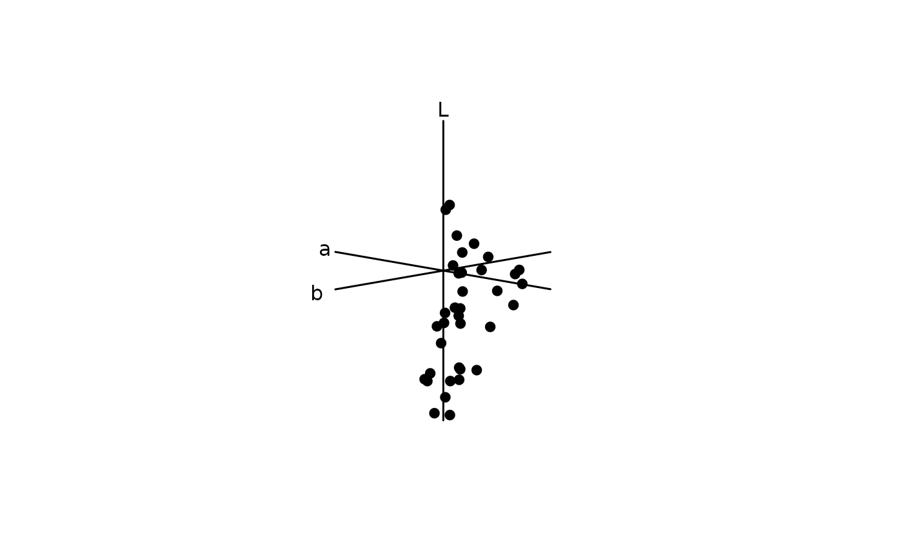
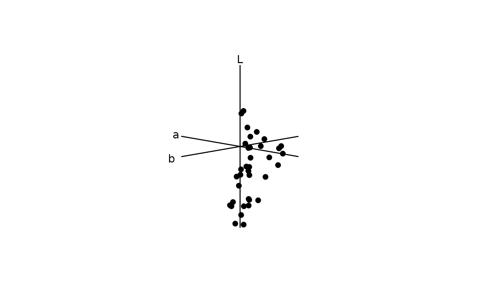

Plot a CIE (XYZ, LAB, or LCH) chromaticity diagram.
cieplot(
ciedata,
mono = TRUE,
out.lwd = NULL,
out.lcol = "black",
out.lty = 1,
theta = 45,
phi = 10,
r = 1e+06,
zoom = 1,
box = FALSE,
ciebg = TRUE,
...
)Arguments
- ciedata
(required). a data frame, possibly a result from the
colspace()orcie()function, containing values for 'x', 'y' and 'z' coordinates for the CIEXYZ model, or LAB coordinates for the CIELAB (or CIELCh models), as columns (labeled as such).- mono
should the monochromatic loci (the 'horseshoe') be plotted when
space = "ciexyz"? Defaults toTRUE.- out.lwd, out.lcol, out.lty
graphical parameters for the plot outline.
- theta
angle to rotate the plot in the xy plane when
space = "cielab"(defaults to 10).- phi
angle to rotate the plot in the yz plane when
space = "cielab"(defaults to 45).- r
the distance of the eyepoint from the center of the plotting box when
space = "cielab". Very high values approximate an orthographic projection (defaults to 1e6). Seegraphics::persp()for details.- zoom
zooms in (values greater than 1) or out (values between 0 and 1) from the plotting area when
space = "cielab".- box
logical. Should the plot area box and axes be plotted? (defaults to
FALSE)- ciebg
should the colour background be plotted for CIEXYZ plot? (defaults to
TRUE)- ...
additional graphical options. See
par().
References
Smith T, Guild J. (1932) The CIE colorimetric standards and their use. Transactions of the Optical Society, 33(3), 73-134.
Westland S, Ripamonti C, Cheung V. (2012). Computational colour science using MATLAB. John Wiley & Sons.
Stockman, A., & Sharpe, L. T. (2000). Spectral sensitivities of the middle- and long-wavelength sensitive cones derived from measurements in observers of known genotype. Vision Research, 40, 1711-1737.
CIE (2006). Fundamental chromaticity diagram with physiological axes. Parts 1 and 2. Technical Report 170-1. Vienna: Central Bureau of the Commission Internationale de l Eclairage.
Examples
# Load floral reflectance spectra
data(flowers)
# CIEXYZ
# Estimate quantum catches, using the cie10-degree viewer matching function
vis.flowers <- vismodel(flowers, visual = "cie10", illum = "D65", vonkries = TRUE, relative = FALSE)
# Run the ciexyz model
xyz.flowers <- colspace(vis.flowers, space = "ciexyz")
# Visualise the floral spectra in a ciexyz chromaticity diagram
plot(xyz.flowers)
 # CIELAB
# Using the quantum catches above, instead model the spectra in the CIELab
# space
lab.flowers <- colspace(vis.flowers, space = "cielab")
# And plot in Lab space
plot(lab.flowers)

# CIELAB
# Using the quantum catches above, instead model the spectra in the CIELab
# space
lab.flowers <- colspace(vis.flowers, space = "cielab")
# And plot in Lab space
plot(lab.flowers)
